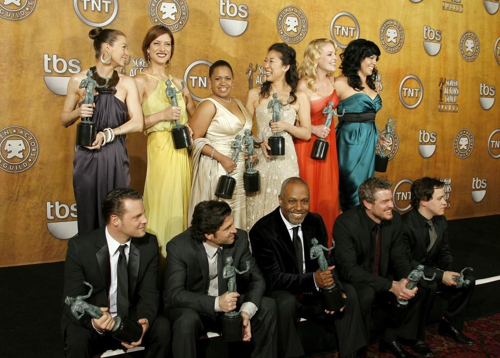

About
The first season premiere of Grey's Anatomy follows five new surgical interns, Meredith, Cristina, Izzie, George, and Alex on their first day at Seattle Grace Hospital. In and out of the operating rooms, the series is filled with drama and romance: love interests include the neuro attending, Dr. Derek Shepherd (often referred to as "McDreamy"), and the cardio attending, Dr. Preston Burke.
As the series continues, the doctors face all types of medical emergencies, including bomb explosions, ferry accidents, and plane crashes. Still, the characters find time for love between the intense surgeries in the OR: Meredith and Cristina both find themselves falling for their attendings.
Reviews
"Grey's Anatomy is a surprisingly addictive show. The plot lines are an interesting blend of soap opera, drama, and comedy--it's not really like anything else. It's very well done--good writing, great acting, and well directed."
"Every season, I have laughed hysterically, cried for hours, jumped on my seat with excitement, and have been inspired over 1000 times. Any Grey's fan will know what hope MerDer's post-it marriage gave, or what her and Cristina's promising “you're my person” meant. The audience of Grey's have evolved along with the compelling journeys of each character."
Other Series You May Like

House
The series follows the life of anti-social, pain killer addict, witty and arrogant medical doctor Gregory House (Hugh Laurie) with only half a muscle in his right leg. He and his team of medical doctors try to cure complex and rare diseases from very ill ordinary people in the United States of America.
The Good Doctor
Shaun Murphy, a young surgeon with autism and savant syndrome, relocates from a quiet country life to join a prestigious hospital surgical unit. Alone in the world and unable to personally connect with those around him, Shaun uses his extraordinary medical gifts to save lives and challenge the skepticism of his colleagues.
How to Get Away with Murder
A group of 5 ambitious, young law students are hired by a ruthless and brilliant defense lawyer after becoming her favorite students in the class. But working for Annelise Keating isn't as easy as they thought it would be. A young sorority girl is found murdered and everyone's a suspect and everybody is hiding something.